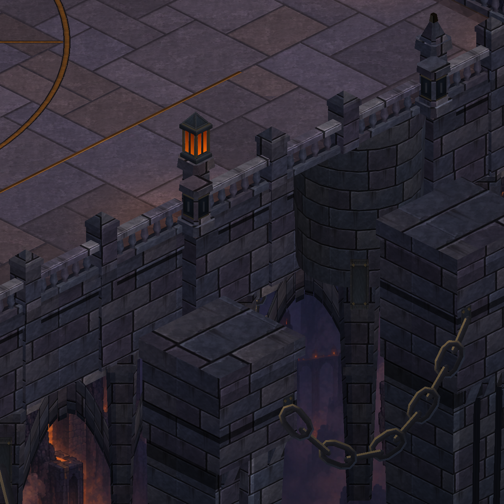
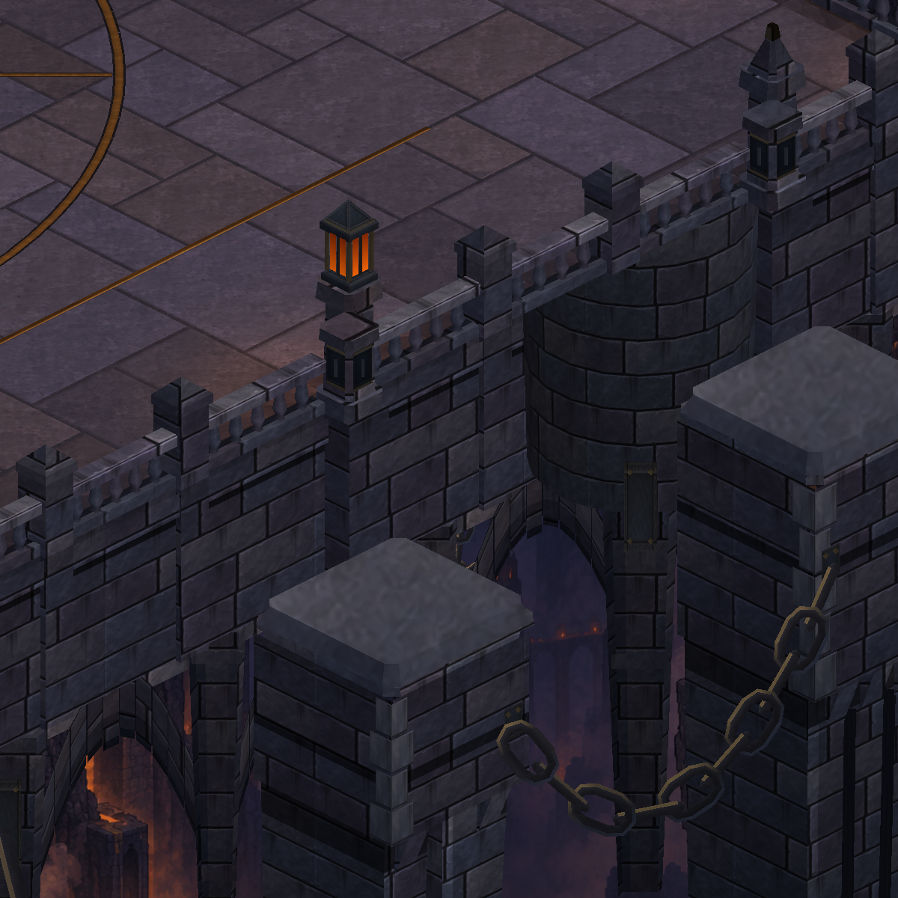

Actual Unity captures. Six existing foundation heads have chamfered crowns, recessed necks and dressed corner stones. The upper slab uses a stone-interior sample instead of wrapping wall mortar over its bevel. Existing footprints, chain anchors and gameplay are retained.


18 region renderers; 84,160 vertices (+1,760). Local structural finish, not completion of the painted reference.